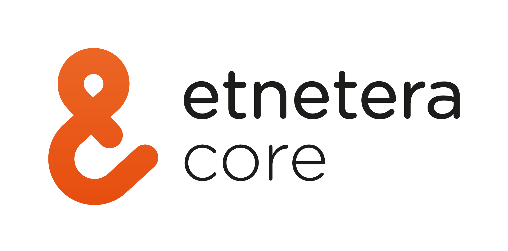
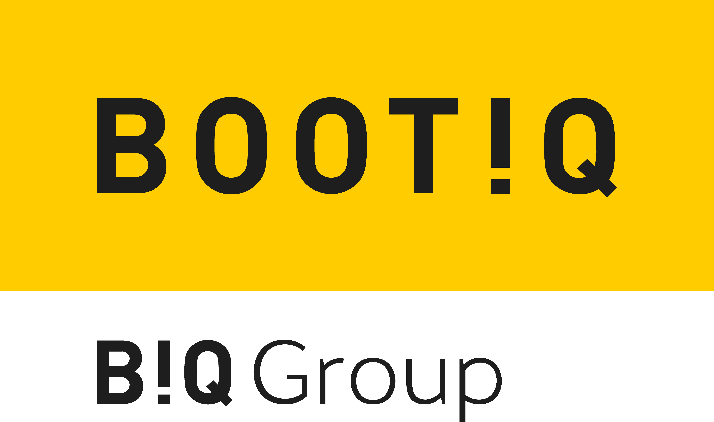

Kurzy & certifikáty


Ahoj, jmenuji se Kačka a jsem nadšená frontend vývojářka. Vždycky mě fascinovala krása digitálního světa a možnosti, které nabízí. Ve své práci kombinuji svou vášeň pro technologie s kreativitou, což mi umožňuje vytvářet atraktivní a funkční webové stránky.
Vývoj webu mě přitahoval už od první chvíle, kdy jsem začala objevovat, jak internet funguje. Byla jsem fascinovaná tím, jak může být webová stránka vytvořena od nuly a jak se z jednoduchého kódu stane plně funkční a vizuálně přitažlivý produkt. Jako frontend vývojářka mám možnost vytvářet interaktivní uživatelské zážitky, které jsou intuitivní a esteticky příjemné. Miluji ten pocit, kdy vidím, jak moje práce ožívá a jak může pozitivně ovlivnit uživatele.
Mým cílem je neustále se rozvíjet a zdokonalovat své dovednosti ve vývoji webu. Sleduji nejnovější trendy a technologie, abych mohla svým klientům nabídnout ty nejlepší možné řešení. V budoucnu bych se ráda zaměřila na vytváření udržitelných a přístupných webových aplikací, které budou sloužit širokému spektru uživatelů. Také mě láká možnost spolupráce na projektech, které mají pozitivní dopad na společnost a životní prostředí. Chci být součástí týmu, který přináší inovativní a smysluplné řešení.

Moje kariéra frontend vývojářky začala v Etnetera Core, jedné z předních českých technologických firem, do které jsem nastoupila s velkým nadšením.
Měla jsem příležitost pracovat na různorodých projektech, které mi umožnily získat cenné zkušenosti a rozvinout své dovednosti.
Vytvářela jsem responzivní uživatelská rozhraní, implementovala design, optimalizovala výkon a zajišťovala přístupnost pro všechny uživatele. Pracovala jsem s nejnovějšími technologiemi a nástroji, což mi pomohlo zlepšit technické dovednosti a naučit se nejlepší praktiky. Naučila jsem se také efektivně komunikovat a spolupracovat s týmem, což je klíčové pro úspěch projektů.
Tato zkušenost mě utvrdila v tom, že vývoj webu je správná cesta. Díky této práci jsem získala pevné základy, které mi pomohly pokračovat v kariéře frontend vývojářky. Jsem vděčná za všechny příležitosti a výzvy, které mi tato pozice přinesla, a těším se na další kapitoly své profesní dráhy.

Od roku 2024 spolupracuji jako frontend developer s BOOTIQ a TALENTIQ, technologickými společnostmi zaměřenými na vývoj moderních digitálních řešení.
Podílím se na vývoji komplexních webových aplikací se zaměřením na kvalitu kódu, škálovatelnost a výkon. Implementuji uživatelská rozhraní s důrazem na přehlednost, přístupnost a dobrý uživatelský zážitek.
V rámci této spolupráce pracuji s moderními frontendovými technologiemi a osvědčenými postupy, které mi umožňují dále rozvíjet technické dovednosti a efektivně spolupracovat na velkých projektech.
Můj první projekt nebyl nijak složitý. Chtěla jsem vytvořit jednoduchou osobní stránku, která by sloužila jako moje portfolio.
Využila jsem HTML, CSS a špetku JavaScriptu. Stránka má jednoduchý design a obsahuje několik sekcí.


Můj další krok mě přivedl k vytvoření profesionální stránky pro in-mobil.cz, což je specializovaná platforma zaměřená na prodej a servis mobilních zařízení. Cílem bylo vytvořit moderní, přehlednou a uživatelsky přívětivou webovou stránku, která by přilákala zákazníky a zprostředkovala jim všechny potřebné informace.
Při vývoji jsem použila HTML, CSS, JavaScript a Google Map API.
Tento projekt byl pro mě obzvlášť důležitý, protože šlo o osobní stránku, která by sloužila jako online galerie pro moje fotografie. Chtěla jsem vytvořit místo, kde bych mohla sdílet svou vášeň pro fotografování s ostatními.
K vývoji stránky jsem použila React s Next.js, Typescript a mnoho javascriptových balíčů.
Fotografický blog jsem později začlenila do své nové osobní stránky katerinahoffman.cz, proto už původní doména není dostupná.


Webová prezentace pro dětskou psycholožku zaměřená na přehlednost, důvěryhodnost a přívětivý vizuální styl.
Stránka je navržená s důrazem na jednoduchou orientaci, přístupnost a srozumitelnou strukturu informací pro rodiče i děti.
Využila jsem HTML, SCSS a moderní postupy pro tvorbu responzivního a udržitelného řešení.
Osobní web zaměřený na prezentaci a prodej mých fotografií a obrazů. Cílem bylo vytvořit vizuálně výraznou, ale zároveň přehlednou galerii, která nechá vyniknout samotnou tvorbu.
Stránka propojuje autorskou fotografii, obrazy a online prezentaci v jednotném stylu s důrazem na atmosféru, jednoduchou orientaci a čisté zpracování.
K vývoji jsem použila React, Next.js, TypeScript a moderní frontendové postupy pro tvorbu responzivního řešení.